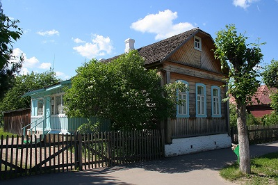
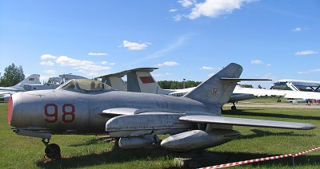

О первом космонавте Земли Ю. А. Гагарине
Юрий Алексеевич Гагарин родился 9 марта 1934 года в деревне Клушино Гжатского района Западной области РСФСР (сейчас — Гагаринский район Смоленской области).
Детство и юность
Детство Юрия прошло в деревне Клушино. 1 сентября 1941 года мальчик пошёл в школу, но 12 октября деревня оказалась в оккупации, и его учёба прервалась. Семью с малыми детьми немцы выгнали, а в доме устроили мастерскую. До начала зимы Гагарины выкопали небольшую землянку, накрыли дёрном, выложили печку. Почти полтора года деревня Клушино оставалась в оккупации, пока 9 апреля 1943 года её не освободила Красная армия. Учёба в школе возобновилась.
4 мая 1945 года семья Гагариных переехала в Гжатск. В мае 1949 года Юра окончил шестой класс Гжатской средней школы. Родители и учителя уговаривали его окончить семилетку в Гжатске, но Юрий хотел продолжить учёбу в Москве, где жили родственники. Попасть в Москву не удалось: пока родители готовили сына к отъезду, набор в московские ремесленные училища уже закончился. Только 30 сентября с помощью дяди, Савелия Ивановича Гагарина, Юрию удалось поступить в Люберецкое ремесленное училище № 10, где он также участвовал в художественной самодеятельности — играл в духовом оркестре на трубе. Одновременно Юрий поступил в вечернюю школу рабочей молодёжи. Во время учёбы, 16 декабря 1949 года, вступил в комсомол. Седьмой класс вечерней школы окончил в мае 1951 года, а в июне окончил с отличием училище по специальности формовщик-литейщик.
Начало полётов
В августе 1951 года Гагарин поступил в Саратовский индустриальный техникум на литейное отделение, где помимо учёбы проявил себя как хороший физкультурник и секретарь ДСО «Трудовые резервы». 25 октября 1954 года впервые пришёл в Саратовский аэроклуб ДОСААФ СССР. В 1955 году Юрий Гагарин добился значительных успехов, окончил с отличием учёбу и совершил на спортивном аэродроме Дубки первый самостоятельный полёт на самолёте Як-18. Всего в аэроклубе Юрий Гагарин выполнил 196 полётов и налетал 42 часа 23 мин.
Карьера в авиации
27 октября 1955 года Гагарин был призван в Советскую армию и направлен в г. Оренбург (в то время — город Чкалов) в 1-е военное авиационное училище лётчиков имени К. Е. Ворошилова. Обучался у известного в то время лётчика-инструктора Я. Ш. Акбулатова. В военном училище Юрия Гагарина назначили помощником командира взвода. Несогласные с высокими требованиями, несколько подчинённых избили Юрия, после чего он около месяца провёл в госпитале. Но, вернувшись в училище, сержант Гагарин не снизил требовательного отношения ни к себе, ни к товарищам.
В учёбе Юрий по всем дисциплинам имел самые высокие баллы. Не удавалось ему освоить только момент посадки — самолёт то и дело клевал носом. Руководство училища приняло решение об отчислении. Но приказ не подписывали, потому что Юрий плакал, говорил, что без неба не может жить. В последний момент начальник училища обратил внимание на маленький рост Гагарина, что влияло на угол обзора и снижало чувство земли. Гагарину подложили на кресло толстую подкладку, после чего он справился с заданием. 25 октября 1957 года Гагарин окончил училище с отличием.
В течение двух лет служил в Луостари (Мурманская область) в 769-м истребительном авиационном полку 122-й истребительной авиационной дивизии ВВС Северного флота, вооружённом самолётами МиГ-15бис. К октябрю 1959 года налетал в общей сложности 265 часов. Имел квалификацию «Военный лётчик 3-го класса». Воинское звание — старший лейтенант.
В космическом отряде
Отбором и подготовкой будущих космонавтов занимались Военно-воздушные силы СССР. Планировалось отобрать 20 кандидатов.
Кандидатов в космонавты отбирала особая группа специалистов Центрального военного научно-исследовательского авиационного госпиталя. Психологи же обратили внимание на следующие особенности характера Гагарина:
9 декабря 1959 года Гагарин написал рапорт с просьбой зачислить его в группу кандидатов в космонавты. Через неделю Гагарина вызвали в Москву для прохождения всестороннего медицинского обследования в Центральном научно-исследовательском авиационном госпитале. В начале 1960 года последовала ещё одна специальная медкомиссия, которая признала старшего лейтенанта Гагарина годным для космических полётов.
11 января 1960 года приказом Главнокомандующего ВВС К. А. Вершинина была организована специальная войсковая часть (в/ч) № 26266, задачей которой была подготовка космонавтов (в дальнейшем, часть была преобразована в Центр подготовки космонавтов ВВС). Гагарин был зачислен в группу кандидатов в космонавты приказом Главнокомандующего ВВС К. А. Вершинина от 3 марта 1960 года, а 11 марта вместе с семьёй выехал к новому месту военной службы. С 25 марта начались регулярные занятия по программе подготовки космонавтов.